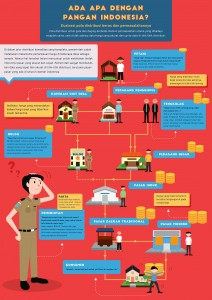

Peraturan dan Panduan
HARI 1 (22 Agustus 2015)
09.00-10.00 Registrasi Ulang dan Networking
10.00-10.15 Pembukaan Hackathon Merdeka
10.15-12.15 Workshop with experts
12.15-13.30 ISOMA
13.30-14.00 Submisi Ide per tim
14.00 Sesi Coding dimulai
15.00-15.30 Pembacaan ide ide peserta secara anonim
16.00-17.00 Pemanduan dari fasilitator – sesi 1
14.00-18.00 Sesi sharing topik pangan
18.00-19.00 ISOMA
21.00-22.00 Pemanduan dari fasilitator – sesi 2
HARI 2 ( 23 Agustus 2015 )
08.00-09.00 Sarapan
10.00-12.00 Penjurian tahap 1 (Mentor memberikan perwakilan terbaik)
12.00-13.00 ISOMA
13.00-15.00 Pitching 10 besar dan penjurian tahap 2
15.00-16.00 Pengumuman pemenang
Syarat dan ketentuan
-
Jumlah anggota tim bebas, antara 2-4 orang.
-
Semua anggota tim wajib melakukan registrasi.
-
Hak cipta melekat pada pembuat aplikasi atau kakas pada acara Hackathon Merdeka. Untuk kode, gunakan lisensi MIT atau pilih salah satu lisensi lain, tapi disarankan memakai lisensi yang umum dan kompatibel dengan banyak lisensi lainnya. Untuk data, gunakan Creative Commons Attribution 4.0 International.
-
Jika memakai framework dan/atau library, harus dalam kategori bebas dan gratis untuk dipakai, diubah, maupun disebarluaskan. Pastikan tidak ada konflik lisensi antara framework dan/atau library yang digunakan dengan kode yang ditulis tim.
Panduan
-
Ide
-
Daftar API/dataset/aplikasi (dapat menggunakan selain ini) ada di sini (untuk membantu sesama, jika dirasa daftar tersebut kurang lengkap, mohon ditambahkan melalui formulir ini).
-
Peserta dapat menggunakan ide dari aplikasi yang sudah ada namun sebaiknya dikembangkan sesuai dengan keperluan.
-
-
Repository
-
Aplikasi yang sudah dibuat akan dipublikasi di berbagai tempat. Oleh karena itu, kode dan data sebaiknya diunggah ke situs yang dapat diakses oleh publik.
-
-
Data
-
Data yang digunakan bersumber dari data yang dikumpulkan berbasiskan komunitas, survey, atau media social (crowdsourcing data collection).
Selain itu, dapat menggunakan tambahan data resmi yang dirilis pemerintah pada Portal Open Data atau Portal Resmi Pemerintah.
-
Proses pengumpulan data sebaiknya bisa dilakukan melalui berbagai platform, misalkan SMS, aplikasi di mobile devices, internet of thing dan sebagainya.
-
Sebisa mungkin data merepresentasikan populasi, yaitu dengan metode sampel yang sesuai dan target sampel yang cukup banyak. Walaupun begitu, bisa saja ide yang di luar dugaan merupakan awal dari cara pandang yang lebih baik.
-
-
Platform
-
Dengan mempertimbangkan kondisi implementasi di lapangan (belum terjangkau internet, atau belum ada jaringan operator sama sekali), sebaiknya bisa dioperasikan setidaknya dalam 2 platform yang berbeda, seperti: Web dan Mobile Application, atau Web dan SMS, atau Web dan internet of things atau kombinasi yang lainnya.
-
-
API
-
Solusi yang ditawarkan sebaiknya menyediakan API yang bisa dipakai untuk mengakses data yang bisa dibaca oleh mesin.
-
-
Dokumentasi
-
Dokumentasi perlu dibuat, untuk memudahkan pengembangan lebih lanjut, untuk memudahkan orang membantu, bahkan setelah hackathon selesai.
-
Peserta disarankan bergabung di code4nation.org dan sudah memperkenalkan diri, untuk memudahkan komunikasi sesudah acara.
-
Pertanyaan yang Sering Ditanyakan
Sudah ada banyak acara Hackathon. Apa yang membuat Hackathon at Istana berbeda?
Hackathon ini memberikan permasalahan nyata, yang menyangkut hajat hidup orang banyak, serta membangun negeri. Tantangannya pun didesain untuk tidak hanya memanfaatkan teknologi dan informasi yang sudah ada, tapi juga mendorong pembuatan sistem teknologi informasi baru.
Apa ada biaya registrasi?
Hackathon ini tidak dipungut biaya.
Apa ini hanya untuk developer berpengalaman?
Tidak. Semua bisa berpartisipasi.
Apa makanan disediakan?
Iya! Kamu akan mendapatkan makan siang, makan malam, dan makan larut malam untuk hari pertama. Sarapan dan makan siang untuk hari kedua. Kopi, teh, dan makanan ringan juga akan disediakan sepanjang hackathon.
Apa event ini berlangsung sepanjang malam?
Iya! Kami akan menyediakan kopi untuk membuat kami bisa bertahan sepanjang malam. Kamu juga dapat beristirahat di area istirahat yang kami sediakan.
Saya ingin bergabung di acara Hackathon at Istana, tapi hanya bisa pada hari kedua. Apa saya masih bisa ikut?
Kami tidak menyarankan itu. Kami ingin para peserta yang datang terus berada di area hackathon selama 24 jam.
Bagaimana kami membentuk tim?
Diwajibkan kamu sudah memperkenalkan diri di forum code4nation.org, untuk memudahkan komunikasi sesudah acara. Kalau bisa, bentuk tim jauh-jauh hari sebelum acara. Walaupun begitu, kami tidak menutup kemungkinan untuk membentuk tim dengan developer lainnya di awal acara berlangsung.
Berapa banyak anggota tim yang bisa saya miliki?
Kami menyarankan 2-4 orang untuk setiap timnya. Kamu juga boleh berpartisipasi secara perseorangan!
Apakah saya boleh menggunakan internet untuk mencari referensi?
Tentu saja boleh.
Untuk designer, apa kami boleh membawa alat design kami (contoh: Wacom) ke hackathon?
Silahkan selama itu tidak menyulitkan Anda.
Apa akan ada pembimbing atau mentor selama hackathon?
Iya, selama hackathon akan ada mentor dari tim Code4Nation, Kantor Staf Presiden dan developer-developer senior lainnya.
Apa para mentor dan pembimbing akan ada terus selama 24 jam?
Kamu bisa bertanya kepada mereka. Kami merekomendasikan kamu untuk meminta email mereka untuk dapat bertanya dengan mereka. INGAT: Mereka ada bukan untuk menuliskan kode untuk anda, tetapi untuk membantu jika anda mengalami masalah saat hackathon.
Siapa saja juri yang akan terlibat?
Kami akan memiliki dewan juri dari pemerintah dan kalangan developer.
Siapa yang memiliki hak intelektual dari aplikasi saya?
Lisensi kode dan data wajib termasuk dalam kategori bebas dan gratis untuk dipakai, diubah, maupun disebarluaskan. Hak intelektual dari aplikasi yang dibuat wajib diserahkan kepada publik.
Apa yang harus kami bawa?
Bawa semangat, ide dan kemampuan coding kamu! Jangan lupa laptop dan charger-nya yah!
Untuk terakhir kalinya, kenapa saya harus mengikuti Hackathon at Istana?
Karena kami tahu kamu ingin berkontribusi untuk membantu hajat hidup orang banyak di negeri tercinta! Kami juga berani menjamin bila acara ini akan menjadi salah satu momen yang paling tidak terlupakan dalam hidup kamu!
Bagaimana bentuk kerjasama antara Kantor Staf Presiden dan Code4Nation?
Hackathon Merdeka adalah acara yang diorganisir dan merupakan inisiatif dari forum TI Code4Nation, difasilitasi oleh Kantor Staf Presiden dalam hal pengadopsian aplikasi TI pemenang untuk dimanfaatkan lebih lanjut.
Kenapa tidak pakai data / tools dari pemerintah untuk memantau barang komoditas?
Perbedaan di sini hanya dalam metodologi. Selama ini, metodologi yang digunakan pemerintah untuk pengumpulan data kebanyakan adalah sampling, sedangkan aplikasi TI dari hackathon adalah untuk crowdsourcing data dari masyarakat. Karena itu data yang diperoleh dari aplikasi TI di sini bermaksud untuk mengkonfirmasi data hasil sampling dan sebagai komplemen untuk melengkapi data, bukan untuk bertentangan dengan data ataupun tools yang dimiliki pemerintah.
Bagaimana Status Aplikasi TI hasil dari Hackathon Merdeka ini?
Hak cipta dari aplikasi TI akan sepenuhnya menjadi milik pembuat aplikasi. Namun, hak guna dan hak untuk pengembangan aplikasi TI akan menjadi milik Kantor Staf Presiden (KSP), dimana KSP berhak melibatkan instansi lain untuk mempergunakan dan/atau mengembangkan aplikasi TI tersebut.
Apakah kualitas para peserta ahli TI di Indonesia cukup dan akan berhasil untuk mengatasi masalah harga komoditas?
Tujuan utama dari acara ini adalah untuk menampung ide dan inovasi dari masyarakat, namun, ide tersebut tidak serta merta dapat langsung diimplementasikan di lapangan, melainkan membutuhkan pematangan dan kerjasama dari semua pihak.
Bagaimana membangun partisipasi masyarakat untuk ikut menggunakan tools pemantauan barang komoditas hasil dari Hackathon ini?
Dalam hackathon ini, peserta ditekankan untuk membangun platform /tools pemantauan barang komoditas. Mekanisme pengumpulan masyarakat setelahnya tidaklah tercakup dalam acara ini dan akan direncanakan dan dikembangkan setelah acara oleh KSP.
Apa permasalahan komoditas sekarang ini?
Sebagai ilustrasi permasalahan komoditas di Indonesia dapat dilihat di infografis berikut:
